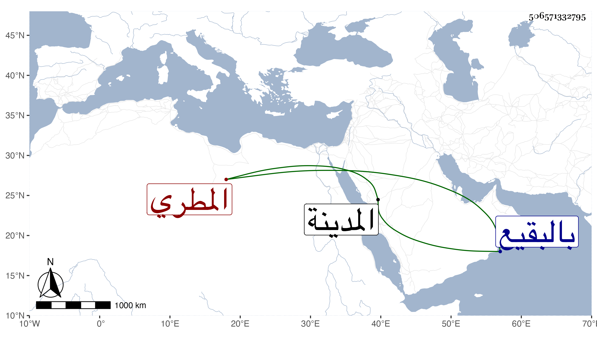

0902Sakhawi.DawLamic.ITO20230111-ara1.EIS1600.506571332795
Biography ID: 506571332795
550
محمد الكمال أبو الفضل المطري أخو الذي قبله وشقيق أم كلثوم التي تزوج بها القاضي المالكي شمس الدين السخاوي ، أمهما خديجة ابنة القاضي علي الزرندي . سمع من أبيه جل مسند الشافعي ومن التقي بن فهد وغيرهما بل قرأ على أبي الفرج المراغي وأخذ عن الشهاب الأبشيطي في الفقه والعربية وغيرهما وتلقى عن أبيه الأذان. مات في رجوعه من الحج عند مفرح ليلة الحادي والعشرين من ذي الحجة سنة ست وستين فجيء به إلى المدينة ودفن بالبقيع ولم يبلغ الأربعين وهو خاتمة الذكور من بيت المطري رحمه الله وأعقب ابنته خديجة التي تزوج بها بعد المحب بن القاضي خير الدين المالكي .
